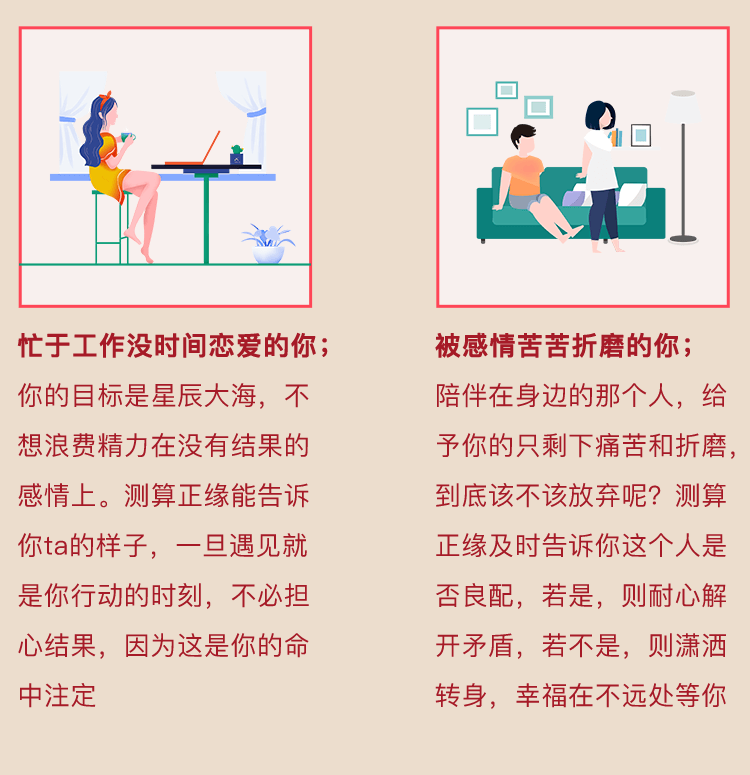

用户评价
李*蕾
189****8978
生活的压力太大了，对彼此越来越没有耐心，还好来这里算过，我们认真谈了一次决定好好珍惜对方。
陈*
173****5468
算的超级准，感谢大师的帮助真的让我找到了我的正缘，现在我们感情很好。
王*芳
170****5772
年纪越来越大，心里那头鹿早就不跳了。幸亏老师帮我测算正缘，让我在第一次遇见她的时候就能鼓起勇气去争取。
蒋*琪
186****4850
感谢大师的帮助，今年我们准备见父母了，本来没想这么快定下来，没想到原来我们是彼此命中注定的人。
王*
158****6567
真的在这个月遇见了我的那个他，身高性格和大师算的非常吻合，我们几乎是一见钟情。太感谢大师了。
董*涵
185****0715
前段时间差点和老婆闹离婚，冷静下来找大师算了一下，我尝试着找老婆好好沟通，原来她一直在等我回头，别的不说了谢谢大师拯救了我的婚姻。
点击添加大师微信